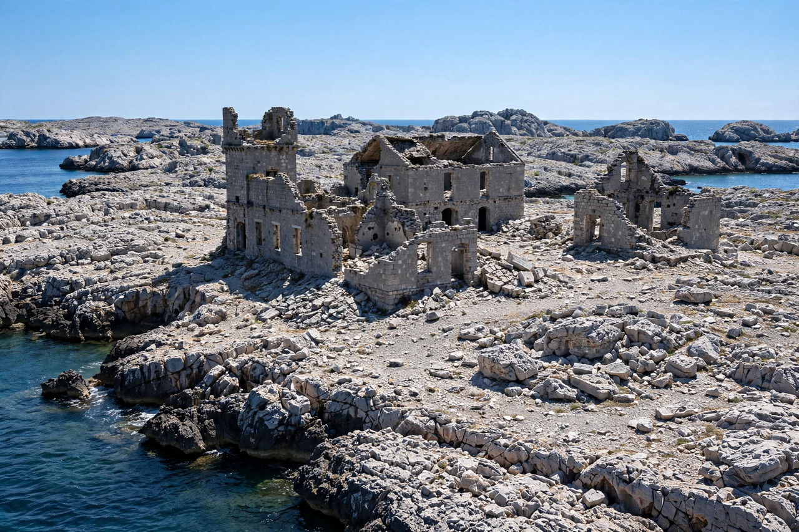

Goli Otok
Goli Otok (literally "Barren Island") is a small uninhabited island in the northern Adriatic Sea, off the coast of Croatia. Between 1949 and 1956 it was the site of a political prison camp operated by the Yugoslav secret police, in which suspected supporters of Stalin and the Cominform were interned, following the split between Tito and the Soviet Union.

The camp
After the Yugoslav Communist Party was expelled from the Cominform in 1948, thousands of party members suspected of loyalty to Moscow were arrested. Beginning in July 1949, prisoners were shipped to Goli Otok, where they were forced to quarry stone under a brutal regime of labour, beating and ritualised "self-criticism" organised through a hierarchy of inmates. Conditions were deliberately harsh; estimates of the number who passed through the camp range from about 13,000 to 16,000, and several hundred died. A neighbouring island, Sveti Grgur, held a camp for women.
Closure and later use
The political camp closed in 1956 as Yugoslav–Soviet relations thawed under Khrushchev. The island continued as an ordinary (though severe) prison until 1988, when it was abandoned entirely. Ruined cell blocks, quarries and workshops remain; the island is uninhabited and visited by tourists and by survivors' associations, though no full memorial museum has been built.
Cultural memory
Goli Otok was a taboo subject in Yugoslav public life until the late 1970s. From the 1980s it became the subject of memoirs, novels and films, and a byword for the repressive side of Tito's Yugoslavia, even as many former prisoners emphasised their own continuing loyalty to socialism.